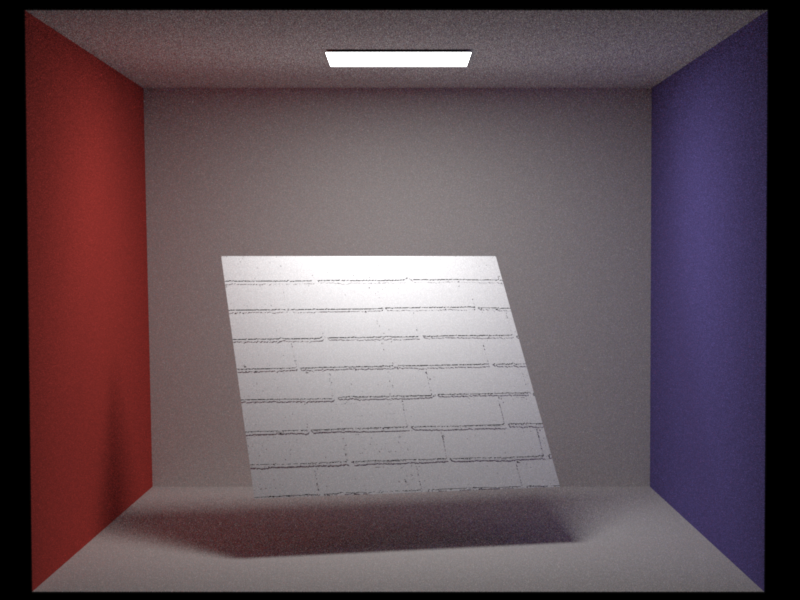
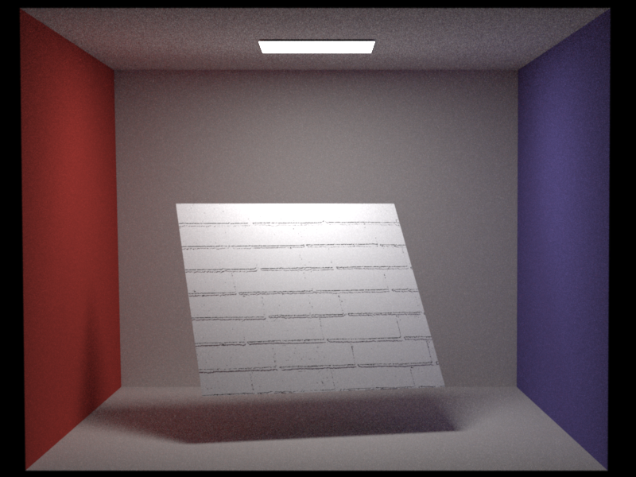

Motivation


{kind=link}
{kind=link}
For the project of the Image Syntheis course 2015 of ETH Zürich I wanted to render an Alphorn on a stage. The atmosphere should be more like at a pop concert than at a traditional concert. This is with coloured stage lights and fog. On the stage should only be the alphorn on a stand without out any peolpe around it. The scene is inside a building. The image matches the theme "Made in Switzerland" since the Alphorn is a typical swiss music instrument.
Simple features
Depth of field
Relevant files:
src/myClasses/physicalCamera.cppThe physical camera model mimics the depth of field effect of real lenses by blurring objects which are far away from the focal plane. This is done by varying the origin of the camera on a disk parallel to the focal plane with radius apertureRadius. The camera can be specified with the following parameters: width (width of the output image), height (height of the output image), toWorld Transformation, fov (the horizontal field of view in degrees), nearClip and farClip to specify th clipping planes, apertureRadius (the radius of the aperture), focalDistance (the distance to the focal plane)
Pictures:
Samples per pixel: 100 apertureRadius: 0.1 focalDistance: 5.0
Samples per pixel: 100 apertureRadius: 0.3 focalDistance: 5.5
Samples per pixel: 100 apertureRadius: 0.8 focalDistance: 6.0
Bump mapping
Relevant files:
src/myClasses/bumpMapBSDF.cppFor simplicity I only support normal maps and not bump maps. A pixel with r, g and b in the normal map will be transform to a normal in the local coordinate frame with n = (2 * r - 1, 2 * g - 1, 2 * b - 1). The lookup is based on the uv coordinates of the current shading point. A bump map is in my implementation a nested bsdf similar to mitsuba.
Pictures:
 

path_mis Samples per pixel: 100
path_mis Samples per pixel: 100 Constant normal map with value (0, 0, 1)
Texturing
Relevant files:
include/myIncludes/texture.h include/myIncludes/constantTexture.h src/myClasses/bitmapTexture.cpp src/myClasses/uvTexture.cpp src/myClasses/checkerboardTexture2D.cpp src/myClasses/checkerboardTexture3D.cpp src/myClasses/exponential3D.cpp src/myClasses/perlinNoise3D.cpp src/myClasses/combinationTexture.cppMy texturing system includes exr-bitmap textures and procedural 2D and 3D textures. To evaluate a texure the call needs to pass a 2D and a 3D point so the underlying texture can take the one which is appropriate for its evaluation. This is a very flexible approach and enables not only the coloring of objects but also changing other parameters of the bsdf. We can also use textures to describe the density of heterogeneous volumes. I will not list all the parameters here, because every texture has its own set of parameter. One they all share is the name parameter, which helps the object the texture gets assigned to, to identifie for what it shoudl use the texture.
Pictures:
Samples per pixel: 100 Left sphere: 2D Checkerboard Right sphere: 3D Checkerboard
Samples per pixel: 500 Left sphere: 3D Perline Noise Right sphere: 3D Exponential texture from red to turquois
Samples per pixel: 10 000 Heterogeneous medium: 3D Checkerboard texture SigmaS: (4.5 4.5 0.5) SigmaA: (0.5 0.5 4.5)
Medium features
Homogeneous Volumetric Path Tracing
Relevant files:
include/myIncludes/medium.h include/myIncludes/phaseFunction.h src/myClasses/homogeneous.cpp src/myClasses/vacuum.cpp src/myClasses/isotropic.cpp src/myClasses/volumetricPath_mats.cppIn my implementation a volume is represented by a mesh which has two media asigned to it. One for the inside and one for the outside. This way the integrator can check when hitting a mesh how the current medium changes. Most of the time I assign a indexed matched dielectric boundary to the mesh, so that the boundary does not have any effect on the appearence of the volume. A homogeneous medium has the typical parameters sigmaS and sigmaA. With my volume_path_mats implementation there is the constraint that they need to add up to the same value for r, g and b. The volume_path_mats is a implementation of the pseudocode in the slides without greater changes. The only paramter this integrator has is a boolean named progressive, with which we can get progressive updates to the desired number of samples per pixel.
Tests:
My volume_path_mats implmementation passes the tests test-direct.xml from Programming Assignment 1 It also passes the test-mesh-furnace.xml from Programming Assignment 3 if we put a homogeneous medium with sigmaS = 1 and sigmaA = 0 inside the furnace.
Pictures:
Samples per pixel: 1000 Medium inside the Sphere: SigmaS: 10 SigmaA: 0 Phase Function: Isotropic
Samples per pixel: 1000 Medium inside the Sphere: SigmaS: 0 SigmaA: 2 Phase Function: Isotropic
Samples per pixel: 1000 Medium inside the Sphere: SigmaS: 1.8 1.8 0.2 SigmaA: 0.2 0.2 1.8 Phase Function: Isotropic
Advanced features
Volumetric Photon Mapping
Relevant files:
include/myIncludes/sphereKDTree.h src/myClasses/volumetricPhotonMapper.cppThe volumetric_photonmapper is based on the photonmapper we developed in the Programming Assignemnt 4. I added a second Kd-tree which stores the volume photons. To be able to not only query for photons near a point, but around a ray, I modified the implementation from kdtree.h in sphereKDTree.h. I based this approach on the suggestions in the Beam Radiance Estimate paper by Jarosz et al[1]. This integrator can do density estimations with a fixed radius or with knn, both on the surface and inside a volume. If surface or volume density estimation ist based on a fixed radius, the integrator can also be run progressivly. And because the volume density estimation from [1] is based on disc intersections we can use the formula from Knaus and Zwicker [2] for both updating the surface and the volume density estimation radius. This integrator can handle homogeneous and heterogeneous volumes. The parameters for this integrator are: photonCount, to specify the total amount of photons we want to store in the scene; surfacePhotonCount and volumePhotonCount to seperatly say how many photons we want to store in each of those maps; surfacePhotonRadius and volumePhotonRadius to set a fixed radius width for the density estimations; surfaceK and volumeK to specify the K nearest neighbours which should be used for the density estimation; And progressive to get progressive updates and run the integrator till we tell it to stop. The alpha for the radius reduction is hard coded to 0.5.
Pictures:
Medium inside the Sphere: SigmaS: 10 SigmaA: 0 Phase Function: Isotropic Nori Progressive photon mapping 2698 iterations 1 sample per pixel per iteration 100 000 photons per iteration Surface photon start radius: 0.05 Volume photon start radius: 0.05 Mitsuba Samples per pixel: 1000
Medium inside the Sphere: SigmaS: 0 SigmaA: 2 Phase Function: Isotropic Nori Progressive photon mapping 2085 iterations 1 sample per pixel per iteration 100 000 photons per iteration Surface photon start radius: 0.05 Volume photon start radius: 0.05 Mitsuba Samples per pixel: 1000
Medium inside the Sphere: SigmaS: (1.8 1.8 0.2) SigmaA: (0.2 0.2 1.8) Phase Function: Isotropic Nori Progressive photon mapping 3009 iterations 1 sample per pixel per iteration 100 000 photons per iteration Surface photon start radius: 0.05 Volume photon start radius: 0.05 Mitsuba Samples per pixel: 1000
Other features
Stratified sampling
Relevant files:
src/myClasses/stratified.cppI implemented a stratified sampler as explained in the course.
direct_mats Samples per pixel: 256
Spotlights and projector lights
Relevant files:
src/myClasses/spotlight.cpp src/myClasses/projectorLight.cppMy spotlight and projector light implementations are based on the descriptions in the book PBRT v2 [4]. The spotlight has a power, which describes how bright and which color the spotlight has. The totalAngle defines the total width of the spotlights cone. With the falloffStart angle we can define a intensity falloff at the edge of the spotlights cone. The spotlight also has a toWorld transformation with which we can set its position and orientation. The projector light works similar to a perspective camera. It therefore defines a fov, which is similar to the spotlights totalAngle parameter. Any texture can be used as the projected image. The projector light also has a width and a height parameter which is necessary to get the aspect ratio of the projected image correct. With the toWorld transform we can again set the position and orientation of the light.
Progressive volumetric_photonmapper 472 iterations 1 sample per pixel per iteration 100 000 photons per iteration Surface photon start radius: 0.1 Volume photon Knn: 10 Spotlight total angle: 20° Spotlight falloff start: 15°
Progressive volumetric_photonmapper 700 iterations 1 sample per pixel per iteration 100 000 photons per iteration Surface photon start radius: 0.1 Volume photon Knn: 10 Projection: Checkerboard 2D
Henyey-Greenstein phase function
Relevant files:
src/myClasses/henyeyGreenstein.cppFor the Henyey-Greenstein phase function, I again just followed the explanaitions in the lecture slides. To test the correctness of my implementation I integrated this phase function into the warptest.
Samples per pixel: 1000 Medium inside the Sphere: SigmaS: 1.8 1.8 0.2 SigmaA: 0.2 0.2 1.8 Phase Function: Henyey-Greenstein g = 0.75
Heterogeneous Media
Relevant files:
src/myClasses/heterogeneous.cppMy implementation of heterogeneous media is based on the pseudocode for delta tracking for sampling a distance and the ratio tracking estimator for the transmittance calculation, both from the Residual Ratio Tracking for Estimating Attenuation in Participating Media paper from Jan Novák et al [3]. A heterogeneous medium takes two 3D textures as input for sigmaA and sigmaS.
Pictures:
Samples per pixel: 1000 Medium inside the Sphere: Heterogeneous, but with the same parameter values everywhere SigmaS: 1.8 1.8 0.2 SigmaA: 0.2 0.2 1.8 Phase Function: Isotropic
Samples per pixel: 1000 Medium inside the Sphere: Heterogeneous, with exponential decay SigmaS: 1.8 1.8 0.2 SigmaA: 0.2 0.2 1.8 Phase Function: Isotropic
Final Submission
The final image shows as intended an Alphorn on a stage with fog. I added projector lights which project swiss flags onto the stage, to emphasize the theme "Made in Switzerland". The disco ball together with the spotlights creates the atmosphere of a pop concert. The spotlights are not coloured as proposed in the beginning, because in my opinion the scene looks more realistic with simple white lights. I wanted to do more realistic looking fog, which has some cloud formations, but I did not manage to do this in time. In the final image I did not use the stratified sampler since I did not integrate it into the photonmapper. The Henyey-Greenstein phase function is also something I did not use in the final image, since I preferre the look of the isotropic one for this scene. Since creating the validation images with nori and mitsuba took me a lot of time, I did not manage to texture and bump map the whole scene as I liked to. I only textured the Alphorn. The scene is render using my progressive volumetric photonmapper.
Progressive volumetric_photonmapper 390 iterations 1 sample per pixel per iteration 1 200 000 surface photons per iteration 600 000 volume photons per iteration Surface photon start radius: 0.2 Volume photon start radius: 0.1 Heterogeneous Volume everywhere: SigmaS = SigmaA They are both a combination of a constant, exponential density and 3D perlin noise.
High resolution{kind=link}
{kind=link}